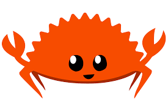

Rust Programming Concepts
Date: 2023-03-01
This post is my understanding of the common programming concepts, implemented in Rust. They cover stuff like,
They will help you lay a solid foundation on the Rust Programming Language.

Variables and Mutability
- Rust has a set of keywords, that are reserved for use only by the language. It is not allowed to use them as names of variables or functions. A list of keywords can be found here Keywords
- By default all variables are immutable in Rust. This is make it easier to write safe and concurrent code.
Create a new rust application using the command cargo new <app-name>
fn main(){ let x = 5; println!("The value of x is {}",x); x = 6; println!("The value of x is {}",x); }
- The Rust compiler generates a error message stating, that the immutable variable 'x' cannot be assigned twice.
- Immutability refers to
the state of not changing, or being unable to be changed.
We run the program using, cargo run command.
error[E0384]: cannot assign twice to immutable variable `x`
--> src/main.rs:4:5
|
2 | let x = 5;
| -
| |
| first assignment to `x`
| help: consider making this binding mutable: `mut x`
3 | println!("The value of x is {}",x);
4 | x = 6;
| ^^^^^ cannot assign twice to immutable variable
- The variables can be made mutable (changeable) by using the
mutcommand. Mutability makes the code more convenient to write, use it wisely. - According to my google searches, mutability doesn't have any impact of code generation i.e, doesn't make code slower or faster, and is left to the preference of the user.
We can now rewrite our old code
fn main(){ let mut x = 5; println!("The value of x is {}",x); x = 6; println!("The value of x is {}",x); }
We get the following result :)
The value of x is 5
The value of x is 6
Constants
- Rust also has constants, that are bound to a name. They are never allowed to change, there are a few key differences between
letandconst. - The naming convention for
constis to make all the characters UPPERCASE, with underscores representing spaces.
Differences b/w Let and Const
- No
mutin const. You cannot usemuton const. - const must be type annotated, i.e, their types must be explicitly defined by us and is not assumed by default.
- const can be declared in any scope, including global scope.
- const should be assigned only a value that is predefined, i.e, it cannot be assigned a value that is computed at runtime. This also means, that a function cannot return a const. We can assign const to basic operations though, that can be performed by the compiler at compile time, like
const THREE_HOURS: u32 = 60*60*3;and these expressions are called Constant Expressions, they are evaluated during the compile time. - const values are available for the entire runtime of the program in the scope in which they are declared, use them wisely, to depict values that you know, will not change, like the speed of light or the value of Pi, etc. Giving them definite names, will make it easier to maintain code.
Shadowing
This is another interesting concept, I have come across, shadowing allows us to overshadow the value that is seen by the compiler, like covering the face with a mask. The compiler will see only the latest value that we have defined for a variable in a particular scope. The following makes it easier.
fn main() { let x = 5; let x = x + 1; // Note that we are using the let to overshadow the variable. Cannot be possible without let, due to immutability. { let x = x * 2; println!("The value of x in the inner scope is: {x}"); } println!("The value of x is: {x}"); }
Output
The value of x in the inner scope is: 12
The value of x is: 6
- We are effectively recreating the variable by using the
letkeyword and not mutating it. - One more difference is, that we are not allowed to mutate a variable's type, but it can be done using shadowing.
Data Types
- Rust is statically typed language, which means it must know the types of all the variables at compile time. The compiler can also infer the type we might wanna use and set it accordingly, but either way, there must always be a type.
Scalar Types
- They have a single value, and we have 4 different scalar types in Rust.
Integer Types
- Integers are numbers without a fractional component.
- They can be signed (i) or unsigned (u). Signed Integers can be made negative, while Unsigned integers can only be positive.
- They can have lengths of 8, 16, 32, 64 or 128-bits.
(represented or i8 or u8 for 8-bits and similairly for the rest).
Signed Variants can store from : -(2^n-1) to +(2^(n-1)-1) Unsigned Variants can stroe from : 0 to 2^(n-1)-1 - They can also be inferred from the architecture (isize or usize).
- Rust defaults to i32.
Integers can be represented in several visual ways, like, hex, octal, binary, bytes or decimal.
Floating-Point Types
There are two primitive types for floating-point numbers, f32 and f64. The default is f64, and all floating-points are signed.
Numeric Operations
- All basic operations such as, addition, subtraction, multiplication, division and remainder are supported in Rust.
- Integer division truncates to the floor and returns the nearest integer.
-5/3 which is equal to -1.66 returns -1.
Boolean Type
- They have two values
trueorfalse. - Specified using the
boolkeyword.
Character Types
- Most primitive alphabetic type
- Used as
let c = 'z', and each character uses 4 bytes, and represents a Unicode Scalar Value, so you can now put emojis, chinese characters, etc, in your code!
Compound Types
- Used to group multiple values into one type. Rust has two primitive compound types: tuples and arrays.
Tuples
- They are used to group a set of variables with different datatypes into a single compound type. They are of fixed size and cannot grow or shrink once declared.
- Optionally we can also declare the type of each value in the tuple.
fn main() { let tup: (i32, f64, u8) = (500, 6.4, 1); }
// Getting values out of a tuple // Destructuring fn main() { let tup = (500, 6.4, 1); let (x, y, z) = tup; println!("The value of y is: {y}"); } // Indexing fn main() { let x: (i32, f64, u8) = (500, 6.4, 1); let five_hundred = x.0; // Indices start from 0 let six_point_four = x.1; let one = x.2; }
- A Tuple with no values is called a unit and represents an empty value or an empty return type. Expressions usually return the 'unit' when there is not return value.
Arrays
- Another way to group multiple values, but in arrays all values must have the same type.
- They also cannot grow or shrink in size.
fn main() { let a = [1, 2, 3, 4, 5]; let months = ["January", "February", "March", "April", "May", "June", "July", "August", "September", "October", "November", "December"]; let b: [i32; 5] = [1, 2, 3, 4, 5]; let c = [3; 5]; // Short hand for [3,3,3,3,3] } // Arrays can be Indexed in the following way: fn main() { let a = [1, 2, 3, 4, 5]; let first = a[0]; let second = a[1]; }
If an index that is trying the be retrieved is greater than the length of the array, rust panics and throws an IndexOutOfBounds error during runtime, this kind of check is not being performed in many low-level languages and leads to memory leakage and Invalid memory access.Rust hence ensures memory safety.
Functions
fn - allows declaration of new functions
main - most important function, entry point to the code
fn main() { println!("Hello, world!"); another_function(); // Calls the another_function() // A parameter 5, of type i32 is passed to the parameterized_function() parameterized_function(5,'a'); } // Declaration of another_function() fn another_function() { println!("Another function."); } // Using functions with parameters fn parameterized_function(x: i32,y:char) // We must declare the type of each parameter // Use , to define multiple parameters { println!("The value of x and y is: {x}{y}"); } /* Hello, world! Another function. The value of x and y is: 5a */
Statements and Expressions
- Statements : Instructions that perform an action and do not return a value, example is the
printlnor thelet. They cannot be assigned to another variable. - Expression : Instructions that perform an action and return a value. They can return a value that can be assingned directly to another variable.
5+6is an expression. Calling a function or a macro is also an expression, since it returns a value. Inlet x = 5, even5is an expression!
Returning values with Functions
- Implicitly all functions return the return value of the last expression, but with can override that feature using the
returnkeyword. - We must also mention the return type using the
->.
fn five() -> i32 { 5 // Returns 5 (implicitly) } fn plus_one(x: i32) -> i32 { x + 1 // Returns the value of x + 1 } fn plus_two(x: i32) -> i32 { return x + 2 // Returns the value of x + 2 (explicitly) } fn main() { let x = five(); println!("The value of x is: {x}"); }
Comments
#![allow(unused)] fn main() { let x = 5; // Single Line Comment /* Multiline comment. */ }
Control Flow
- Control flow in terms of if-conditions is very similar to other languages
If Condition
fn main() { let number = 6; if number % 4 == 0 { // The condition must be an expression returning a bool type. println!("number is divisible by 4"); } else if number % 3 == 0 { println!("number is divisible by 3"); } else if number % 2 == 0 { println!("number is divisible by 2"); } else { println!("number is not divisible by 4, 3, or 2"); }
- We can also use if in a let declaration like this,
- But both the if and the else bodies, must respect the type of the variable being declared and must both return the same type. This is because variable must have a single type.
#![allow(unused)] fn main() { // This will run let number = if condition { 5 } else { 6 }; // This wont let number = if condition { 5 } else { "six" }; } }
- First if condition is checked and then else if conditions are checked in the same order and then the else condition for all other cases.
Loops
- The loop keyword makes rust run the loop's body over and over again until we tell it to stop explicitly by providing an end condition.
fn main(){ loop{ println("Hello!"); } } // Prints "Hello!" an infinite number of times, till I hit Ctrl+C
- One may also choose to use the
breakkeyword, that stop the loop. - Or the
continuekeyword, that tells the loop to move on to the next iteration, without executing what follows the continue statement in the body of the loop.
// By default break and continue apply to the inner loop, but we can specify a label to the loop, to mention which loop we want to break. fn main() { let mut count = 0; 'counting_up: loop { println!("count = {count}"); let mut remaining = 10; loop { println!("remaining = {remaining}"); if remaining == 9 { break; } if count == 2 { break 'counting_up; } remaining -= 1; } count += 1; } println!("End count = {count}"); }
While and For Loops
fn main() { let mut number = 3; while number != 0 { // If the above condition is true, the loop body runs println!("{number}!"); number -= 1; }// Else Exit the loop println!("LIFTOFF!!!"); } // Using a while loop to loop through an array [Not preferred] fn main() { let a = [10, 20, 30, 40, 50]; let mut index = 0; while index < 5 { println!("the value is: {}", a[index]); index += 1; } } // Using a for loop for the same purpose fn main() { let a = [10, 20, 30, 40, 50]; // This is a more elegant way to do the same thing for element in a { println!("the value is: {element}"); } // 3 2 1 LIFTOFF!!! .. generates an array and .rev reverses it. for number in (1..4).rev() { println("{number}"); } println("LIFTOFF!!!"); }
This is my summary of the Rust Lang Book Chapter 3. Hope you found it interesting. I will be writing code walkthroughs in the future, stay tuned :)